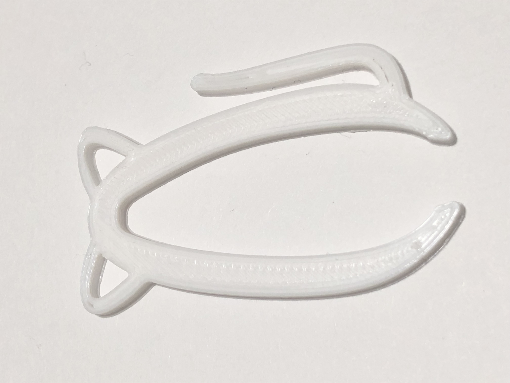
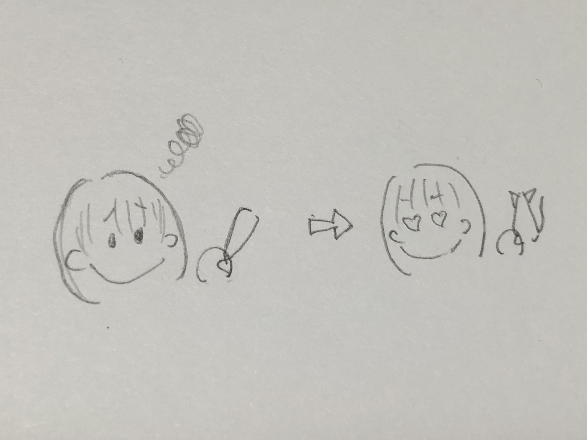
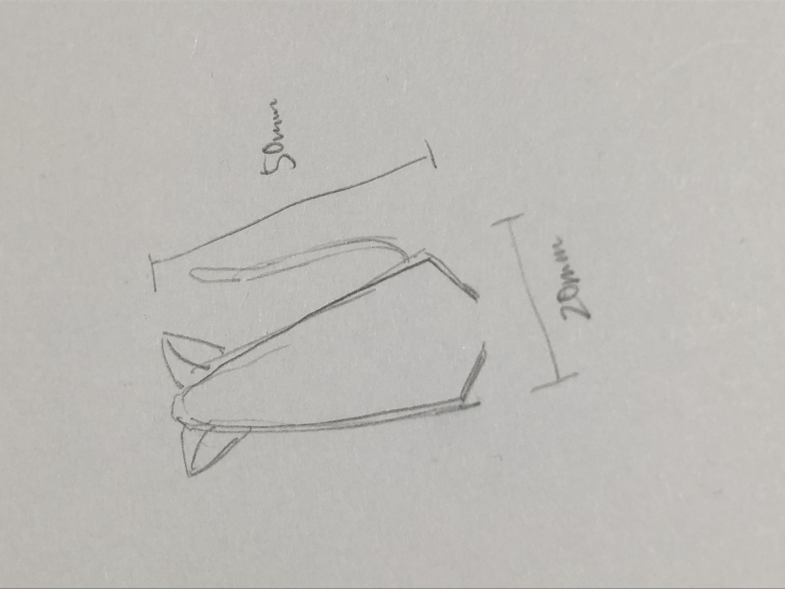

第1回課題
課題 ピンセットを進化させる
タイトル：ねこぴん

制作理由：ピンセットといえば銀色のシンプルなものが多いので、もっとかわいいデザインのものがあっても良いと思ったから。
従来のピンセットには、小さくて無くしやすい、落ちている時に踏むと痛いという改善点があると思ったから。

↑ストーリーボード

↑手書きスケッチ
stlファイル
〇この作品のポイント
・耳の部分にひっかけることで無くしにくいところに保管できる。
・ボールチェーンを付ければポーチやカバンなどに付けてなくさずに持ち運べる。
・かわいいデザイン
・挟みたいものの大きさに合わせて、通常の部分としっぽの部分を使い分けられる。（より細かいものはしっぽの部分で挟む。）
〇改善点
・しっぽの部分を使おうとすると耳の部分が邪魔になる。
Fashion360の使い方
- スケッチ作成
［作成］の中の［ソリッド］の中から［スケッチを作成］を選択→底面と側面が表示されるので、底面を選択→［作成］の中からツールを選んで、マス目に点を並べて平面の図を作る。（今回はフィット点スプラインで作成）→［スケッチを終了］
- 押し出し
［作成］の中の[ソリッド］の中から［押し出し］を選択→数字を打ち込んで押し出したい高さを設定
- ２回に分けて書いた線がうまく繋がらなかったときの対処法
繋げて書いたつもりなのにスケッチがいくつかに分散してしまっていた場合、押し出しがうまくできなくなるので、１つにまとめる必要がある。
＜方法＞
スケッチ制作画面の左上に［スケッチ］という表示があるので、その横の▷マークをクリックする。
いくつもスケッチが出てくるので、自分が残したいものだけを残し、その他は非表示にする。（非表示にするには目のマークをクリック）
分散しているスケッチの中から１つを選択、コピーし、その後非表示にする。
元となるスケッチを表示し、そこにペーストする。
- ファイルへの保存方法
［ファイル］→［保存］
以前に保存したものを開きたい場合は［ファイル］→［開く］
- stlファイルへの変換方法
［ツール］→［メイク］→［３Dプリント］→３Dプリントユーティリティーに送信のチェックを外す。→stlに変換したいボディを選択→［OK]→半角英数でファイル名をつけて保存
Curaの使い方
- Curaとは
・３Dプリンターのスライサーソフト
・３Dモデルをgcodeと呼ばれる座標データに変換（スライス）し、３Dプリンターで印刷ができるようにしてくれる。
参考サイト
Ultimaker Cura のインストール・基本的な使い方
- 使い方
フィラメントを汎用からPLAに変更→stl形式に変換した３Dモデルのファイルを開く→［スライス］→［ディスクに保存する］（半角英数で）
３Dプリンターの使い方
３Dプリンターの右側から３Dカードを取り出す。→それをパソコンに入れ、gcodeのデータを移す。→プリンターにカードを戻す。→プリンターの画面の［print］を押す。→自分のファイルを選択。→［print］
＊プリンターは熱くなるので注意！
・プリントし終わったらヘラを使ってはがす。